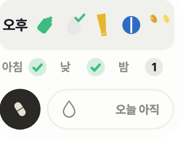
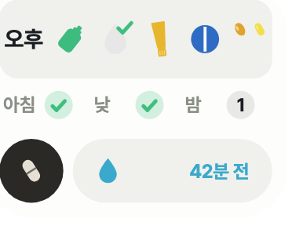
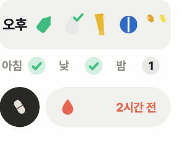

탭마다 다른 판
소개는 출품작 느낌으로 가기로 했다. 나머지 두 탭은 읽는 글이라 같은 손을 쓸 수 없다.
약수첩의 실제 「왜 만들었나」와 「개발기」 내용으로 그렸다. 글꼴과 색은 배포된 사이트 그대로다.
| 탭 | 주인공 | 읽는 법 | 쓸 손 |
|---|---|---|---|
| 소개 | 앱 화면 | 훑는다 — 무엇인지 몇 초에 알면 된다 | 출품작 판 — 캡처에 번호 뱃지, 인출선, 줌 콜아웃. 줄글은 도식으로 (정해짐) |
| 왜 만들었나 | 전과 후의 차이 | 따라간다 — 무엇이 막혔고 무엇이 풀렸나 | 캡처가 주인공이 아니다. 주석을 얹을 자리가 없다 → 아래 W1~W3 |
| 개발기 | 시간과 결정 | 훑다가 멈춘다 — 언제 무엇을 왜 바꿨나 | 지금 카드 여덟에 그림이 없다 → 아래 M1~M3 |
왜 만들었나 — 후보 셋
전과 후를 어떻게 보이느냐가 이 탭의 전부다.
알림은 옴. 지우면 끝.
삼성 건강 복약 알림을 주로 사용, 메디세이프는 잠깐. 시각 알림까지는 문제없음 — 알림을 지운 뒤 먹었는지가 어디에도 안 남는 것이 문제.
전 — 시각 알림 앱
후 — 약수첩
막힌 지점과 한 것
먹었는지 기록 없음, 기억에 의존
체크가 곧 알림 해제. 미리 체크한 구간은 알림 없음, 놓친 구간에만 한 번
오늘 챙긴 것을 보려면 앱 실행
홈 화면 위젯 — 다 챙겼으면 체크, 남았으면 개수
정해진 시각이 없어 시각 알림 앱으론 불가
마지막 점안 후 경과 시간을 위젯 띠에. 간격이 지나면 빨강
알림은 옴. 지우면 끝.
같은 네 단계를 전과 후가 어떻게 지나는지. 셋째 칸에서 갈린다 — 전은 아무것도 안 남고, 후는 그 자리에서 끝난다.
빨강 테두리가 막혔던 칸, 초록이 그것을 푼 칸.
막힌 지점과 한 것
먹었는지 기록 없음, 기억에 의존
체크가 곧 알림 해제. 미리 체크한 구간은 알림 없음, 놓친 구간에만 한 번
오늘 챙긴 것을 보려면 앱 실행
홈 화면 위젯 — 다 챙겼으면 체크, 남았으면 개수
정해진 시각이 없어 시각 알림 앱으론 불가
마지막 점안 후 경과 시간을 위젯 띠에. 간격이 지나면 빨강
알림은 옴. 지우면 끝.
빨강 테두리가 막혔던 칸, 초록이 그것을 푼 칸.
막힌 지점과 한 것
| 막힌 것 | 왜 막혔나 | 한 것 | 결과 |
|---|---|---|---|
| 알림을 지우면 끝 | 먹었는지 기록 없음, 기억에 의존 | 체크가 곧 알림 해제. 미리 체크한 구간은 알림 없음, 놓친 구간에만 한 번 | 0회미리 체크한 구간에 오는 알림 |
| 위젯이 없음 | 오늘 챙긴 것을 보려면 앱 실행 | 홈 화면 위젯 — 다 챙겼으면 체크, 남았으면 개수 | 2×1홈 화면 칸 |
| 간격으로 넣는 약 | 인공눈물은 정해진 시각이 없어 시각 알림 앱으론 불가 | 마지막 점안 후 경과 시간을 위젯 띠에. 간격이 지나면 빨강 | 2탭기록 · 4초 안에 두 번 |
앱 동작 기준. 경과 표시 간격은 설정값(기본 60분).
가장 큰 변화 — 인공눈물



개발기 — 후보 셋
카드 여덟 중 그림이 붙은 것은 다섯인데, 지금 판에서는 카드를 옆으로 밀어야 보인다.
위젯 4×3, 열흘 뒤 2×1.
막힘 네 구간을 한눈에 보여 주려니 넣을 것이 많음
한 것 구간마다 한 줄
결과 홈 화면 한 판을 다 씀
막힘 체크가 그날만 살고 사라짐
한 것 날짜별로 쌓아 저장
결과 지난 기록 다시 보기
막힘 일주일치 약통 채우기를 잊음
한 것 토요일 아침 알림 하나
결과 위젯에는 안 세움
막힘 위젯에서 하는 일은 상태 확인뿐
한 것 터치 입력을 걷어냄
결과 4×3 에서 4×2 로
막힘 두 줄도 홈 화면을 많이 차지
한 것 네 구간을 두 열로
결과 4×1
오른쪽으로 세 장 더 있다 — 2×1, 이름과 아이콘, 인공눈물 하루 경계, 채우기 알림 미루기.
위젯 4×3, 열흘 뒤 2×1.


그때 치수 그대로 다시 그린 그림 — 줄어든 크기가 실제 비율이다.
무엇을 왜 바꿨나
| 날짜 | 바꾼 것 | 막혔던 것 | 한 것 |
|---|---|---|---|
| 8/23 | 4×3 | 네 구간을 한눈에 보여 주려니 넣을 것이 많음 | 구간마다 한 줄. 약은 위젯에서 눌러 체크 |
| 8/24 | 기록 영구 보관 | 체크가 그날만 살고 다음 날 사라짐 | 날짜별로 쌓아 저장 |
| 8/25 | 주간 약통 알림 | 일주일치 약통 채우기를 자꾸 잊음 | 토요일 아침 알림 하나 |
| 8/30 | 4×2 | 위젯에서 실제로 하는 일은 상태 확인뿐 | 터치 입력을 걷어내고 두 줄로 접음 |
| 9/1 | 4×1 | 두 줄도 홈 화면을 많이 차지 | 네 구간을 두 열로 눌러 담음 |
| 9/2 | 2×1 | 폭이 절반이면 네 구간을 다 못 그림 | 지금 구간만 약을 그리고 나머지는 표식으로 |
| 9/2 | 이름과 아이콘 | «약통» 은 경구약만 가리켜 연고·안약이 빠짐 | 「약수첩」으로. 아이콘은 앱 넷 공통 규칙 |
| 9/4 | 인공눈물 하루 경계 | «N시간 전» 이 자정을 넘으면 어제 것이 오늘 것처럼 | 하루 경계를 새벽 3시로 |
| 9/5 | 채우기 알림 미루기 | 토요일 아침에 약속이 있으면 못 채움 | 알림에 «오후 9시로 미루기» |
위젯 4×3, 열흘 뒤 2×1.
- 막힘
- 네 구간을 한눈에 보여 주려니 넣을 것이 많음
- 한 것
- 구간마다 한 줄, 약은 위젯에서 눌러 체크
- 결과
- 홈 화면 한 판을 다 쓰고도 인공눈물 띠 자리가 빠듯함
- 막힘
- 체크가 그날만 살고 다음 날 사라짐
- 한 것
- 날짜별로 쌓아 저장
- 결과
- 화면은 그대로, 지난 기록 다시 보기 가능
- 막힘
- 일주일치 약통 채우기를 자꾸 잊음
- 한 것
- 토요일 아침 알림 하나
- 결과
- 매일 하는 일이 아니라 위젯에는 안 세움
- 막힘
- 위젯에서 실제로 하는 일은 상태 확인뿐
- 한 것
- 터치 입력을 걷어내고 두 줄로 접음
- 결과
- 체크는 앱으로. 4×3 에서 4×2 로
- 막힘
- 두 줄도 홈 화면을 많이 차지
- 한 것
- 네 구간을 두 열로 눌러 담고 앱 버튼을 동그랗게
- 결과
- 4×1. 인공눈물 띠는 폭의 절반만 사용
- 막힘
- 폭이 절반이면 네 구간을 다 못 그림
- 한 것
- 지금 구간만 약을 그리고 나머지 셋은 이름과 표식으로
- 결과
- 칸은 줄었는데 지금 구간 약은 오히려 커짐
- 막힘
- «N시간 전» 이 자정을 넘으면 어제 것이 오늘 것처럼 보임
- 한 것
- 하루 경계를 새벽 3시로
- 결과
- 오늘 기록이 없으면 띠가 비고 「오늘 아직」 표시
- 막힘
- 토요일 아침에 약속이 있으면 그때 못 채움
- 한 것
- 알림에 «오후 9시로 미루기»
- 결과
- 그날 저녁에 한 번 더
그림이 붙은 날은 다섯, 나머지 넷은 글만. 밀지 않아도 다 보인다.